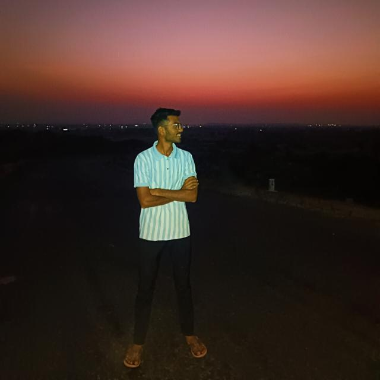
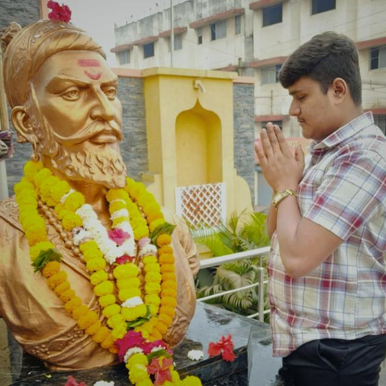
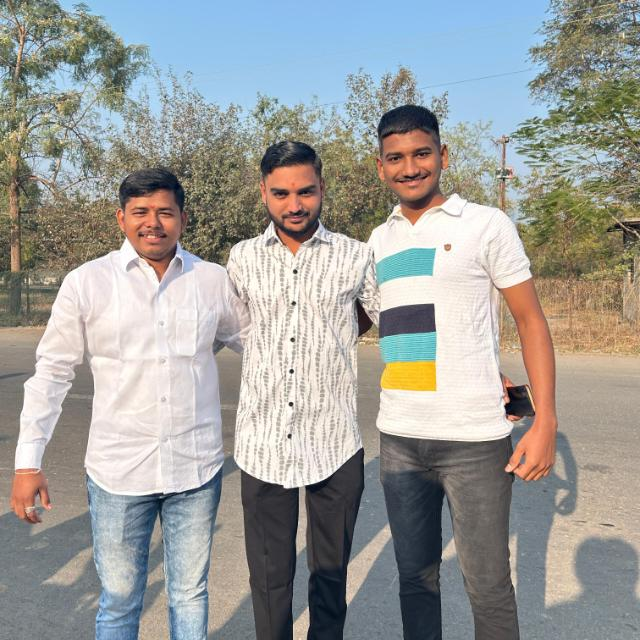
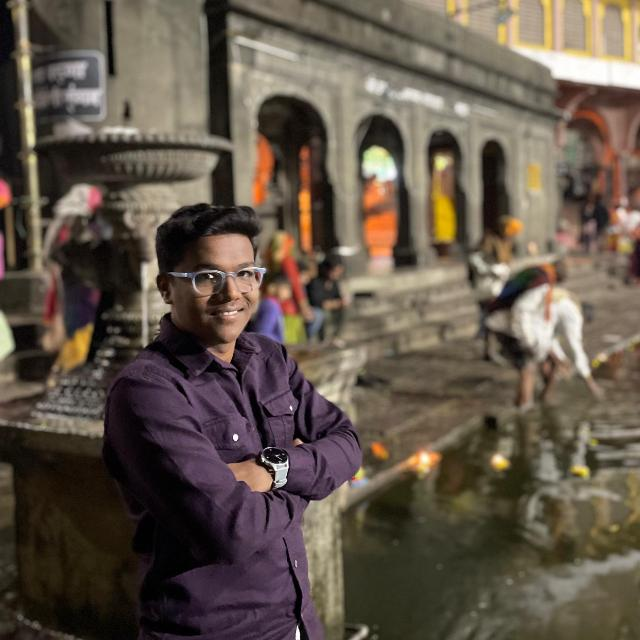
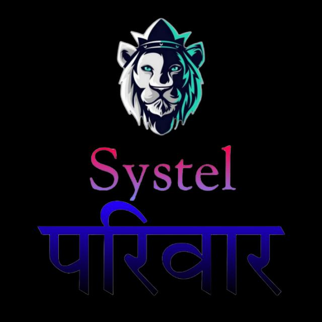

लैन्गिक कढरे बातमी पत्राचे कॅमेरामॅन प्रवीण पाटील (पी पी पी )

लैन्गिक कढरे बातमी पत्राचे अध्यक्ष पै.भावेश दादा काळे (दमदार वाय्क्ती महत्तव)

लैन्गिक कढरे बातमी पत्राचे जळगाव जिल्हाचे चे अध्यक्ष ची.सर्वेश दादा (बोलवा तेवढा कमी आहे )

लैन्गिक कढरे बातमी पत्राचे सचिव ची.प्रसाद दादा गवळे
लैन्गिक कढरे बातमी पत्राचे संचालक। आपले सर्वांचे लाडके ची.रोहित भाऊ कढरे (भावी नेते )
